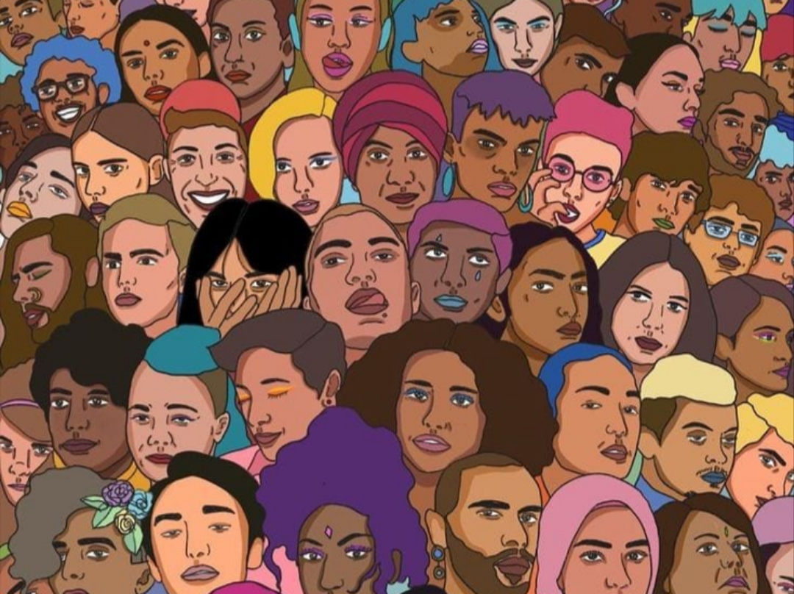
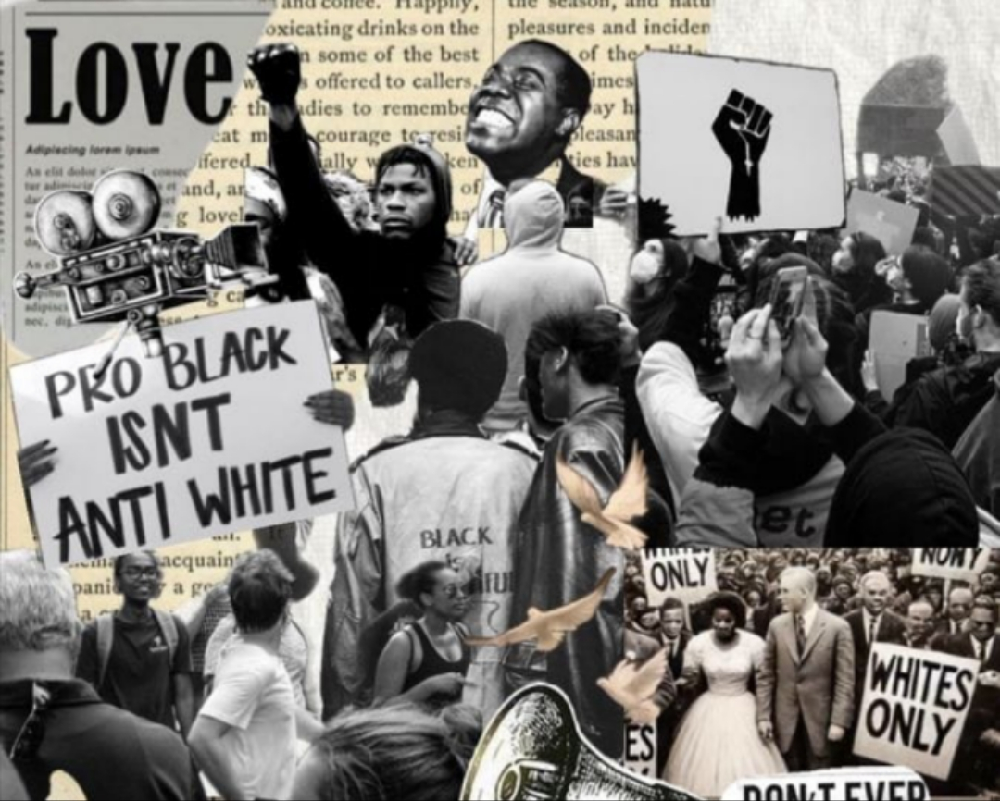
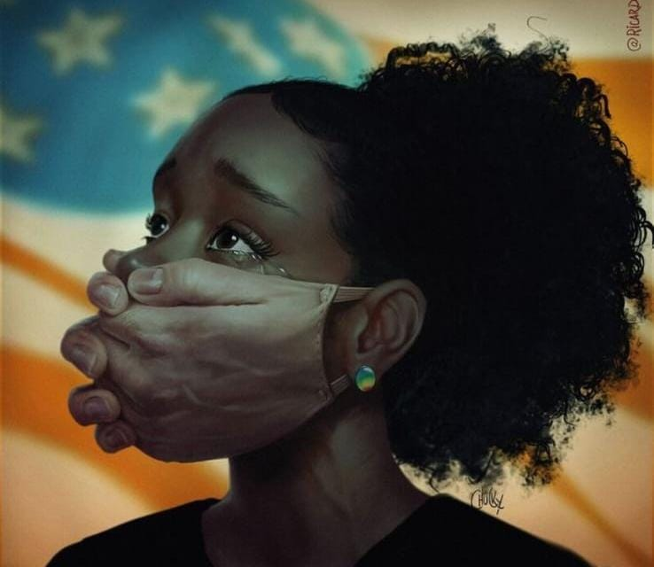

Vozes silenciadas
A proposta convida à reflexão sobre a exclusão histórica e estrutural de grupos sociais que foram afastados dos espaços de fala, poder e decisão. Entre eles estão minorias étnicas e raciais (pretas e pardas), mulheres negras, trabalhadoras domésticas, pessoas com deficiência, comunidades LGBTQIA+ e populações periféricas.
Essas populações enfrentam um ciclo contínuo de silenciamento e apagamento de suas identidades, marcado por desigualdade de oportunidades, negligência governamental e invisibilidade social. Essa exclusão gera impactos profundos — como afastamento, alienação e degradação social — limitando o acesso a espaços de representação e ascensão.

Promover a representatividade é, portanto, um ato de justiça e inclusão social, capaz de dar visibilidade às narrativas marginalizadas e fortalecer uma sociedade mais plural, democrática e consciente de sua diversidade.
O poder da arte
A arte e a linguagem, em suas diversas formas de expressão, cumprem um papel essencial na denúncia das invisibilidades sociais e na busca pela transformação de um cenário histórico de exclusão. Elas se configuram como poderosos instrumentos de justiça e inclusão, atuando onde a sociedade e as instituições se mostram cegas ou negligentes.

A arte tem a capacidade única de tornar visível o que é sutil, doloroso ou complexo demais para ser comunicado apenas por dados ou notícias. Ela utiliza metáforas, narrativas e imagens para evocar empatia e reflexão profunda.
Ao dar forma a vivências de marginalização, a arte confronta o apagamento na narrativa histórica. Ela desnaturaliza a exclusão e obriga o espectador ou leitor a testemunhar a realidade de grupos que o poder público frequentemente negligencia.
A presença de narrativas protagonizadas por indivíduos de minorias étnicas, raciais ou de gênero é vital. Ela oferece um senso de pertencimento e valida a identidade dos grupos oprimidos, enquanto educa o público majoritário sobre a riqueza e a complexidade dessas vidas.

Ao narrar histórias multifacetadas e humanizadas, a arte desafia os estereótipos perpetuados pela mídia tradicional e pela cultura dominante. Ela oferece uma visão de mundo mais matizada, contribuindo para a desconstrução do preconceito.
Obras que celebram a resistência, como o legado de Carolina Maria de Jesus, inspiram novas gerações a lutar por seus direitos e a utilizar a própria voz e criatividade como ferramentas de enfrentamento à desigualdade.

Desta forma, a arte transcende o entretenimento e a estética, consolidando-se como um direito e uma necessidade para a construção de uma sociedade equitativa.
Transformação
O tema "Vozes Silenciadas" não se esgota na análise da arte, mas se estende à esfera da ação social e política, tratando-se de uma questão de direitos humanos, economia e democracia.
A superação da invisibilidade social exige uma transformação sistêmica. Embora a arte atue como a voz e a memória desta luta, o impacto completo requer que a sociedade e as instituições internalizem o valor da diversidade e se comprometam com a garantia de espaço, voz e direitos a todos os grupos. A representatividade, portanto, é a chave para construir uma sociedade mais plural, consciente e verdadeiramente democrática.